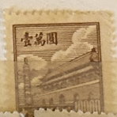
| SOURCE | TITLE| IMAGE MATCH | click to source page |
| eBay | China - North East China - 1950 Tiananmen - Gate of Heavenly Peace - 10,000 | eBay |  |
| stamps-plus.com | Stamps Plus | China Peoples Republic | 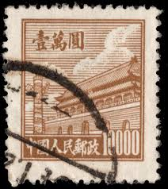 |
| Find Your Stamps Value | Value of 厦门外围包夜（约炮上门）联系方式维心安排加88236881联系方式维心-城市周边都可安排顶级女孩20250508JEHWKJHFKJNCXVNKNV.iqf stamps | 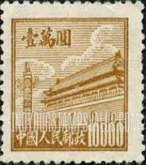 |
| Miraheze | Tienanmen definitives - Stamp Encyclopedia | 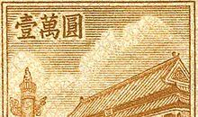 |
| HipStamp | People's Republic of China 1950 Sc 23 Gate of Heavenly Peace 10,000$ Sta... | Asia - China, General Issue Stamp / HipStamp | 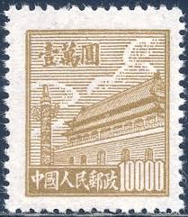 |
| HipStamp | 1950 China Stamp: Sc#21-3, Gate of China MNH Complete SET Very Rare | Asia - China, General Issue Stamp / HipStamp | 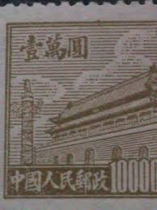 |
| Fandom | China (People's Republic) 1950 Gate of Heavenly Peace (2nd Group) | JPP-Stamps Wiki | Fandom |  |
| Xabusiness.com | R2 Scott 21-23 Regular Issue with Design of Tian An Men(2nd Print) - China Stamps | 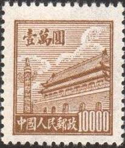 |
| eBay | PR China 1950 First Issue $10000 MNG A19P58F518 | eBay | 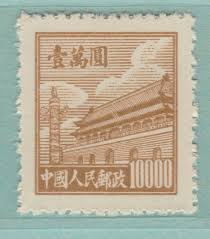 |
| eBay | Violet Chinese Stamps for sale | eBay | 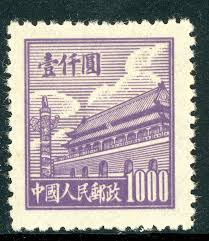 |
| eBay | People's Republic of China Scott #20 Used | eBay | 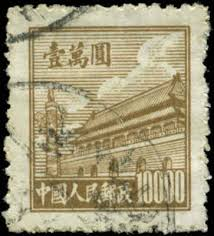 |
| Fandom | China (People's Republic) 1950 Gate of Heavenly Peace (1st Group) | JPP-Stamps Wiki | Fandom | 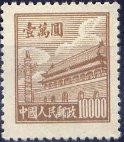 |
| Alamy | Republic of China Postage Stamp Stock Photo - Alamy |  |
| Todocolección | china 1000,00 yuan, año 1950. - Compra venta en todocoleccion | 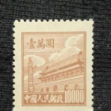 |
| Alamy | China postage stamp Stock Photo - Alamy | 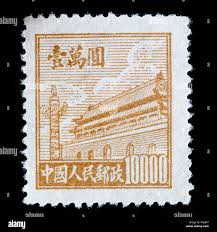 |
| World Stamps Project | China-Gate-of-Heavenly-Peace-stamp-1951 – World Stamps Project | 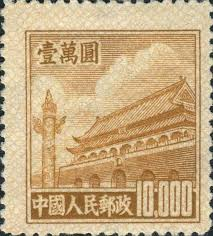 |
| eBay | China (PR) #95 used | eBay |  |
| eBay | 1950 PRC China Sc#25 MNH NG VF | eBay | 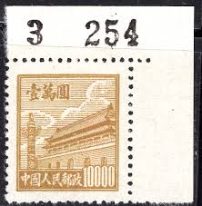 |
| eBay | 1950 Rare PRC - China printed on Both Sides SC#20 Used | eBay | 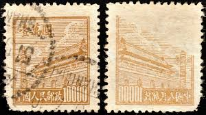 |
| eBay | China Stamps - 中国邮票-1950, R2 Scott 23第二次印刷天安门设计, MNH-VF | eBay | 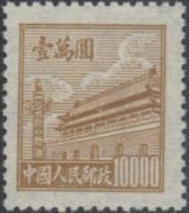 |
| lastdodo.com | Gate of heavenly peace 3000 (1951) - China - People's Republic - LastDodo |  |
| Todocolección | china 1949 sello (*) - 9/48 - Buy Antique stamps of China on todocoleccion | 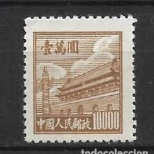 |
| eBay | PRC China Stamps: 1950 Gate of Heavenly Peace. 1st Issue SC 17 MNH, perf Fault | eBay | 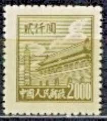 |
| HipStamp | People's Republic of China 1951 Sc 93 Gate of Heavenly Peace 3,000$ Stam... | Asia - China, General Issue Stamp / HipStamp | 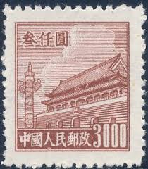 |
| eBay | People's Republic of China Scott #20 Mint No Gum As Issued | eBay | 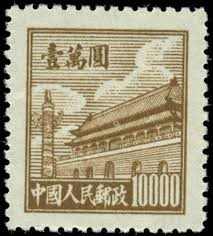 |
| Miraheze | Northeast China Liberation Area - Stamp Encyclopedia | 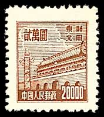 |
| eBay | China - MNH Block of 4 Stamps.........................A-1020-x | eBay | 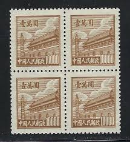 |
| Alamy | Stylized stamp hi-res stock photography and images - Alamy | 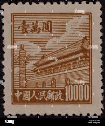 |
| eBay | $10000 Gate of Heavenly Peace SC#23 A5 ~ China Post No. R2 ~ Used ~ China | eBay | 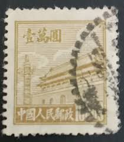 |
| Find Your Stamps Value | NORTHEAST CHINA: Gate of Heavenly Peace - 中国东北: 东北贴用: 天安门$20000 Deep brown stamp price, value | 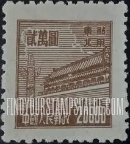 |
| Find Your Stamps Value | NORTHEAST CHINA: Gate of Heavenly Peace - 中国东北: 东北贴用: 天安门$2500 Yellow stamp price, value | 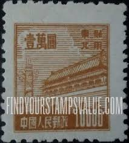 |
| Stamp Auction Network | Kelleher and Rogers Limited Sale - 38 Page 41 | 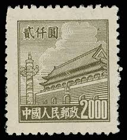 |
| eBay | People's Republic of China, Scott #23, $10000 Gate of Heavenly Peace, Used | eBay | 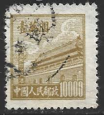 |
| eBay | TaiwanChina ROC SC 20 NGAI (5fge) | eBay |  |
| Find Your Stamps Value | NORTHEAST CHINA: Gate of Heavenly Peace - 中国东北: 东北贴用: 天安门$5000 Orange stamp price, value |  |
| eBay | PR China 1950 Second Issue $3000 MNG A19P57F505 | eBay | 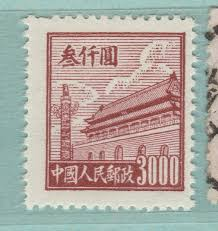 |
| PicClick UK | RARE , CHINA Stamp 20.000 Gate Of Heavenly Peace 1950, £1.00 - PicClick UK |  |
| eBay | People's Republic of China Scott #23 Mint No Gum As Issued | eBay | 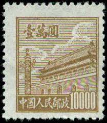 |
| eBay | $10000 Gates of Heavenly Peace SC#23 A5 ~ China Post No. R1 ~ Used | eBay |  |
| Xabusiness.com | RN2 Regular Stamps with Design of Tian An Men (For Use in the Northeast, 2nd Print) - China Stamps | 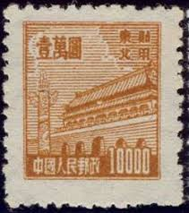 |
| TouchStamps | Stamp: Gate of Heavenly Peace (China, People's Republic 1951) - TouchStamps | 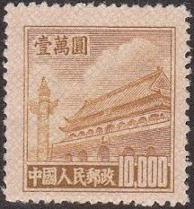 |
| eBay | PRC China Stamps: 1950 Gate of Heavenly Peace. 1st Issue SC 15 MNH, perf Fault | eBay | 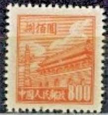 |
| Find Your Stamps Value | NORTHEAST CHINA: Gate of Heavenly Peace - 中国东北: 东北贴用: 天安门$5000 Orange stamp price, value | 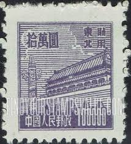 |
| eBay | P R CHINA 1951 R5 (10,000 20,000) 普5 MNH O.G. | eBay | 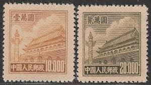 |
| eBay | CHINA Tien An Men gate, PRC, 3 SHADES 10000, 1950's MNH, NO GUM | eBay |  |
| HipStamp | CHINA PRC Stamps Pair{2}Peking $1000 c1950 Used ex Old-time Collection BLACK448 | Asia - China, Stamp / HipStamp | 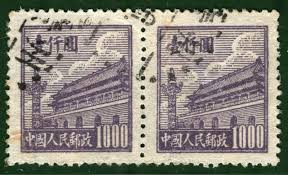 |
| Colnect | China, People's Republic : Stamps [Year: 1950] [1/11] : Colnect 📮 | 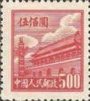 |
| CollectorBazar | China 1950 Gate of Peace 5v MH | 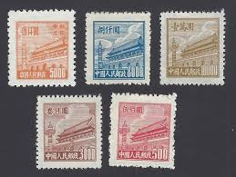 |
| eBay | One China Stamp | eBay | 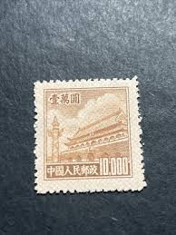 |
| World Stamps Project | China-Gate-of-Heavenly-Peace-stamp-1950-06 – World Stamps Project |  |
| Find Your Stamps Value | Valeur du timbre Gate of heavenly peace 20000 | 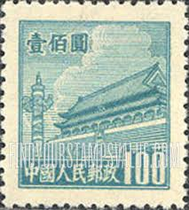 |
| Todocolección | china 1000,00 yuan, año 1950. - Buy Antique stamps of China on todocoleccion | 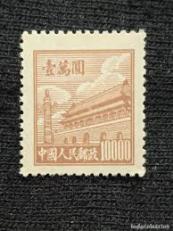 |
| World Stamps Project | Northeast China – varieties of postage stamps – World Stamps Project | 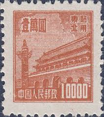 |
| Find Your Stamps Value | NORTHEAST CHINA: Gate of Heavenly Peace - 中国东北: 东北贴用: 天安门$20000 Violet brown stamp price, value |  |
| Lington & Bernie Consulting | P.R.C 10000 Mint Split Cloud First Gate - Lington & Bernie Consulting | 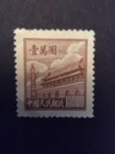 |
| bwdavis.us | WW China, Peoples Rep. of - Collectibles of Bwdavis | 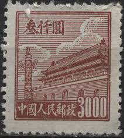 |
| Found these and was wondering if anyone here is able to date or value any of them. None have gum on the back or cancellations on the face. Two have been mounted | 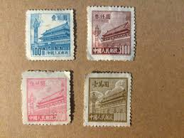 | |
| eBay | Rare China Stamp R5 1951 100K Yuan Tlan An Men 5th Print MNH F-VF Coarse Paper | eBay | 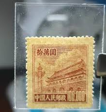 |
| chinesestamp.org | R05/PU5/普5, Regular Issue with Design of Tian An Men (5th Print)《天安门图案普通邮票（第五版）》 - Chinese Postage Stamps | China Postage Stamps | Chinese Stamp Album | China Philatel | ACPF | Stamps Catalogue of | 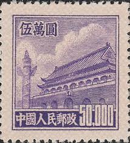 |